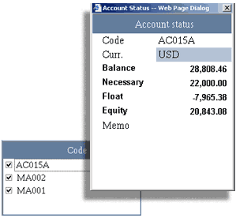

Account
Status
The
trading platforms tracks all trading activity, allowing investors to monitor
fund position of the account in real time.
For user
of single trading account, the status is available directly at the lower left
corner of the main screen.
The Account Status area
will become a list of accounts if the user is holding multiple trading accounts,
user may access the fund position of a certain account by double mouse click
at the account code in the list:
|

|
|
Account Status for multiple trading accounts
|
The
Account Status provides the following information to users:
-
Code
- the identification of the trading account
-
Curr. -
the base currency of the trading account. If the account is a multi-currency
trading account, it becomes the reporting of the trading account
-
Balance -
the cash / ledger balance of the trading account. The amount is expressed
in the account's base currency or it's reporting currency
-
Necessary -
the total necessary margin required in order for the account to maintain it's
open position/s.
The amount is expressed in the account's base currency or it's reporting currency
-
Float P/L - the amount of floating profit or loss incurred
from the account's open positions.
The amount is expressed in the account's base currency or it's reporting currency
-
Equity -
the equity margin of the trading account. The amount is expressed
in the account's base currency or it's reporting currency
-
Memo - matters that needing attention of the user.